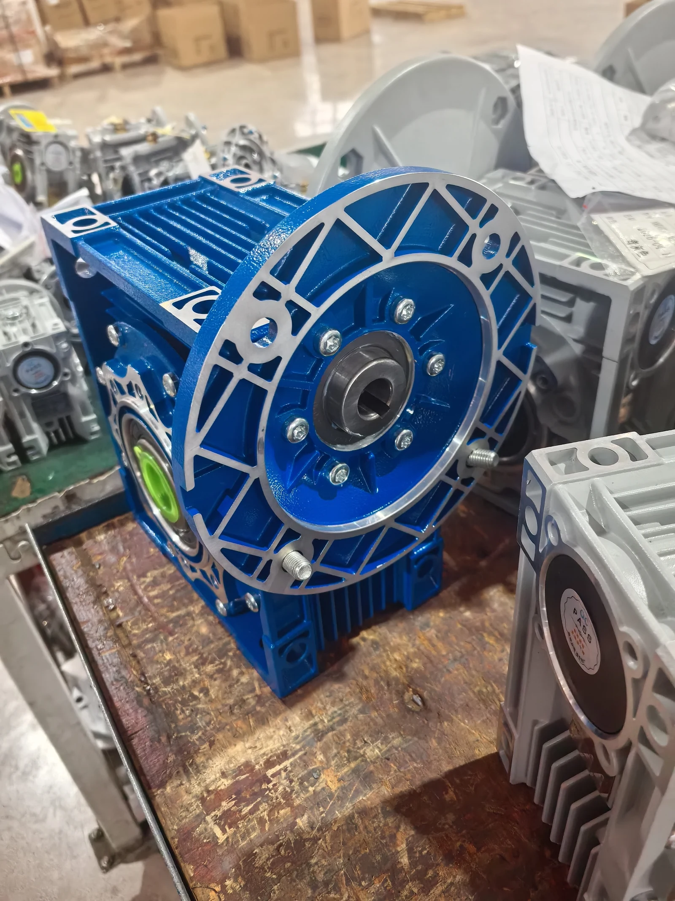

This original SMK workshop photo shows a finished blue RV63-style worm gearbox with an output flange. The exact ratio, motor interface, shaft arrangement and rated torque must be confirmed against the selected model and final drawing.
What is an RV63 worm gearbox?
RV63 is a compact worm gear reducer with a nominal 63 mm center distance. It changes the drive direction by 90 degrees while reducing speed and increasing usable output torque. Buyers may also see the designation NMRV063. These names describe a size family, not a complete interchangeable specification.
For preliminary comparison, a typical RV63 configuration may use a 19 mm input shaft, a 25 mm output bore, and optional 28 mm output arrangements. Exact dimensions vary with input adapter, output configuration and manufacturer, so the approved drawing remains the installation reference.
RV63 worm gearbox specifications
| Model | RV63 / NMRV063 |
|---|---|
| Gear type | Right-angle worm gear reducer |
| Ratio | 7.5:1–100:1 |
| Housing | Aluminum alloy |
| Mounting | Foot, output flange or torque arm |
| Input | IEC motor flange or solid input shaft, subject to configuration |
| Output | Hollow bore, plug-in output shaft or output flange |
| Motor options | Three-phase, single-phase or brake motor, subject to duty and interface |
RV63 ratio and output-speed selection
Typical nominal ratios include 7.5, 10, 15, 20, 25, 30, 40, 50, 60, 80 and 100. Required ratio starts with the motor's actual rated speed and the machine's target output speed.
| Motor rated speed | Ratio | Theoretical output speed |
|---|---|---|
| 1400 rpm | 10:1 | 140 rpm |
| 1400 rpm | 20:1 | 70 rpm |
| 1400 rpm | 30:1 | 46.7 rpm |
| 1400 rpm | 40:1 | 35 rpm |
| 1400 rpm | 50:1 | 28 rpm |
These values are theoretical. Motor slip, load and gearbox efficiency affect real operating speed. Use the worm gearbox ratio and torque calculator for a preliminary check.
How to estimate RV63 output torque
Estimated output torque = Motor torque × Ratio × Estimated efficiency
Example: a 0.75 kW motor rated at 1400 rpm produces approximately 5.12 N·m of input torque. Using 75% as an illustrative efficiency assumption:
| Motor | Ratio | Illustrative calculated output torque |
|---|---|---|
| 0.75 kW / 1400 rpm | 20:1 | About 76.8 N·m |
| 0.75 kW / 1400 rpm | 30:1 | About 115.2 N·m |
| 0.75 kW / 1400 rpm | 40:1 | About 153.6 N·m |
Important: These are calculation examples, not RV63 rated-torque guarantees. Efficiency and permissible torque vary by ratio, input speed, lubrication, duty and manufacturer. Select the gearbox using the rated output-torque table and apply the required service factor.
RV63 motor selection
The preliminary motor range is approximately 0.18 to 2.2 kW, subject to the selected ratio and operating conditions. Common application requests include 0.75 kW, 1.1 kW and 1.5 kW motors. A larger motor does not automatically create a safe drive: the gearbox can be overloaded if the available motor torque exceeds the reducer's permissible input or output rating.
| Selection item | What to confirm |
|---|---|
| Motor power | Enough for the machine load without exceeding gearbox ratings |
| Rated speed | Use actual nameplate rpm for ratio and torque calculations |
| Voltage and frequency | Match the destination power supply and motor winding |
| IEC interface | Verify frame, flange, pilot, shaft diameter and key |
| Duty | Operating hours, starts per hour, reversing and shock load |
| Thermal conditions | Ambient temperature, ventilation and continuous operation |
For demanding duty, calculate design torque using the worm gearbox service factor guide. If a motor and reducer are required as one assembly, review the matched worm gear motor page.
Typical RV63 applications
RV63 worm gear reducers are commonly specified for conveyor systems, packaging machinery, food-processing equipment, mixers, agricultural machinery and automatic production lines. Final selection must reflect the actual load, starts, operating hours and environment.
RV63 interface and installation checklist
- Required ratio or output rpm
- Continuous, starting and peak torque
- Motor power, rated rpm, voltage and frequency
- Input flange, pilot, shaft diameter and keyway
- Output bore or solid shaft dimensions
- Foot, flange or torque-arm mounting
- Mounting position and shaft orientation
- Operating hours, starts, reversing and shock load
- Ambient temperature, dust, moisture and washdown exposure
- Quantity and destination
For the complete family, compare the RV25–RV150 NMRV size guide. For another model-specific example, see the RV50 gearbox guide.
Frequently asked questions
What ratios are commonly available for an RV63 worm gearbox?
Typical nominal ratios are 7.5, 10, 15, 20, 25, 30, 40, 50, 60, 80 and 100. Confirm availability and rated data for the exact configuration.
What motor power can be matched with an RV63 gearbox?
The preliminary range is approximately 0.18 to 2.2 kW, but the acceptable motor depends on ratio, input speed, duty, service factor and thermal capacity.
How do I calculate RV63 output torque?
Estimate input torque from motor power and rated speed, then multiply by ratio and an appropriate efficiency estimate. Final selection must use the manufacturer's rated output torque for the exact ratio and duty.
Is RV63 the same as NMRV063?
They commonly refer to a size 63 worm gearbox family, but model codes, flange dimensions, shaft dimensions and ratings can vary. Always confirm the drawing.